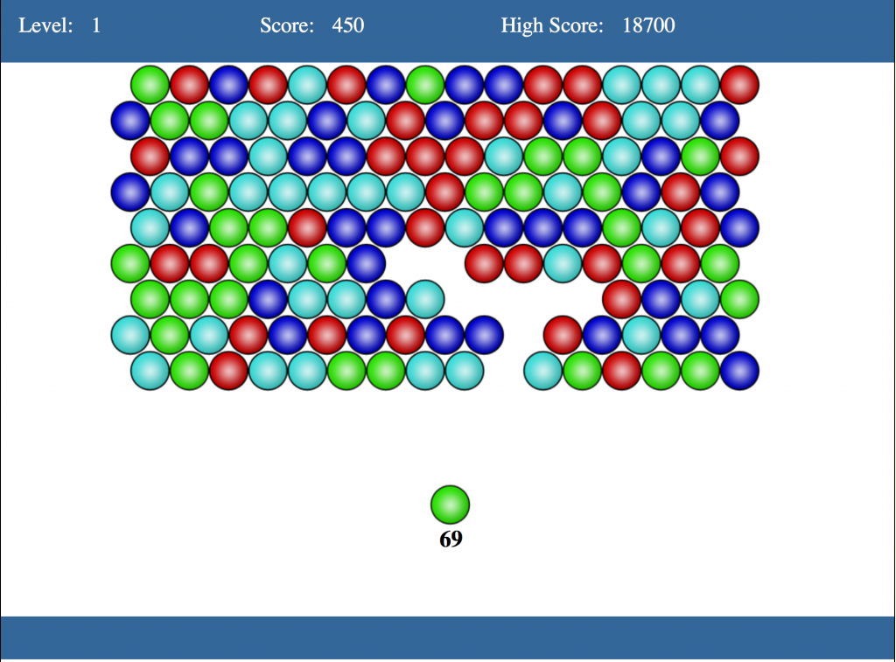

Mozilla 在去年與 Humble Bundle 合作，為大家提供多款獨立開發遊戲，如《超越光速 (Faster Than Light，FTL)》以及《Voxatron》。當然還有其他遊戲透過「Humble Mozilla Bundle」的助力而進入 Web 平台。我們今年規劃要以 JavaScript 的開發活動來玩更大一點，像是可支援 SIMD 與 SharedArrayBuffer。不用外掛程式就能在 Web 上玩遊戲實在太美妙了。玩家不會再被逼著安裝一堆自己都不知道是什麼的東西，而且一旦他們喜歡遊戲，也只要一個連結就能在社交平台上輕鬆分享。試想多位玩家如同病毒感染一樣蜂擁連線，似乎能創造無限可能！
我最近專注於 WebGL 的即時繪圖之時，才發現這玩意實在強大，讓我必須稍退一步先了解遊戲邏輯的開發作業及不同的發佈管道。我看了幾本有關遊戲開發的書，最近剛看完 Karl Bunyan 所寫的《Build an HTML5 Game》，心想應該分享一下自己的心得。接著針對 HTML5 遊戲的分享與發佈管道，再為大家解釋其他的替代方案。
簡介《Build an HTML5 Game》

《Build an HTML5 Game (BHG)》一書是針對已具備程式撰寫經驗；曾寫過 HTML、CSS、JavaScript；知道該如何於本端伺服器架設程式碼；並正在開發 2D 一般遊戲的開發者所寫。從概念發想、以小型工作著手，乃至於結束整個開發作業，都用前面幾章架構出良好的閱讀脈絡。該書作者也開宗明義的說此書不會討論進階 3D 視覺效果 (將透過 WebGL 說明)，也不會談到大家所熟悉的遊戲玩法機制 (Game play mechanics) 設計。反之，此書將專心說明該如何使用 HTML5 與 CSS3 來取代 Flash 而達到一般遊戲開發目的。看完全書就能實作出類似《泡泡龍》的消泡泡遊戲。另外可至 buildanhtml5game.com 找到原始碼、遊戲展示，以及更多實作範例的解決方案。

本書也提到許多遊戲所需，或值得讀者深入研究的 Web API。其中的 API、樣式、函式庫包含：Modernizr、jQuery、CSS3 transitions/animations/transforms、Canvas 2D、audio tags、Sprite Atlases、DOM manipulation、localStorage、requestAnimationFrame、AJAX、WebSockets、Web Workers、WebGL、requestFullScreen、觸控事件 (Tuch Events)、「viewport」的 meta tags、開發者工具等等。
如果你正打算開發 HTML5 遊戲，想找一本還不錯的開發參考書，當然可以試著翻閱本文提到的《Build an HTML5 Game (BHG)》。而除了這裡提到的參考書之外，你當然也應該要點擊這裡參閱原文全文，其內另將為大家概述如遊戲發佈管道、執行環境的選擇、管理後續的更新檔，當然也少不了精采的程式碼。期待你開發出屬於自己的 HTML5 遊戲！